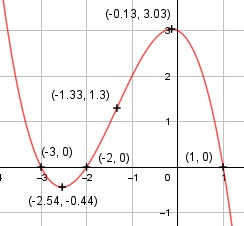

Aufgabe 34 f(x) = -0,5x3 - 2x2 - 0,5x + 3 f'(x) = -1,5x2 - 4x - 0,5, f''(x) = -3x - 4, f'''(x) = -3 Definitionsbereich: -∞ < x < ∞ Wertebereich: -∞ < f(x) < ∞ Asymptoten: - Symmetrie: - Nullstellen. - 0,5x3 - 2x2 - 0,5x + 3 = 0 |:(-0,5) x3 + 4x2 + x - 6 = 0 Durch Probieren gefunden x = 1. Hornerschema: 1 4 1 -6 x1 = 1 1 5 6 -------------------------- 1 5 6 0 Polynomdivision: -0,5x3 - 2x2 - 0,5x + 3 : (x-1) = -0,5x2-2,5x-3 -(-0,5x3 + 0,5x2) ------------------ -2,5x2 - 0,5x + 3 -(-2,5x2 + 2,5x) ---------------- -3x + 3 -(-3x + 3) ----------- 0 x2 + 5x - 6 = 0 p, q - Formel: p = 5, q = 6 x2,3 = x2,3 = -2,5 ± x2,3 = -2,5 ± x2,3 = -2,5 ± 0,5 x2 = -2 x3 = -3 N1(1|0), N2(-2|0), N3(-3|0) Schnittpunkt mit der y-Achse: f(0) = -0,5 * 03 - 2 * 02 - 0,5 * 0 + 3 = 3 Sy(0|3) Extrempunkte: -1,5x2 - 4x - 0,5 = 0 A, B, C - Formel: A = -1,5, B = -4, C = -0,5 x1,2 = x1,2 = x1,2 = 4 ± 3,61 x1,2 = ---------- -3 x1 = -2,54 f(-2,54) = - 0,5 * (-2,54)3 - 2 * (-2,54)2 - - 0,5 * (-2,54) + 3 = -0,44 x2 = - 0,13 f(-0,13) = -0,5 * (-0,13)3 - 2 * (-0,13)2 - - 0,5 * (-0,13) + 3 = 3,03 f''(-2,54) = - 3 * (-2,54) - 4 > 0 --> Tiefpunkt (-2,54|- 0,44) f''(-0,13) = - 3 * (-0,13) - 4 < 0 --> Hochpunkt (-0,13|3,03) Wendepunkte: -3x - 4 = 0 |+3x 3x = -4 | :3 x = -(4/3) f(-4/3) = - 0,5 * (-4/3)3 - 2 * (-473)2 - - 0,5 * (-4/3) + 3 = 1,3, f'''(-4/3) ≠ 0 --> Wendepunkt ((-4/3)|1,3) Graph: .
